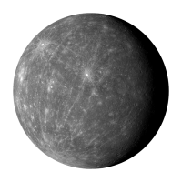
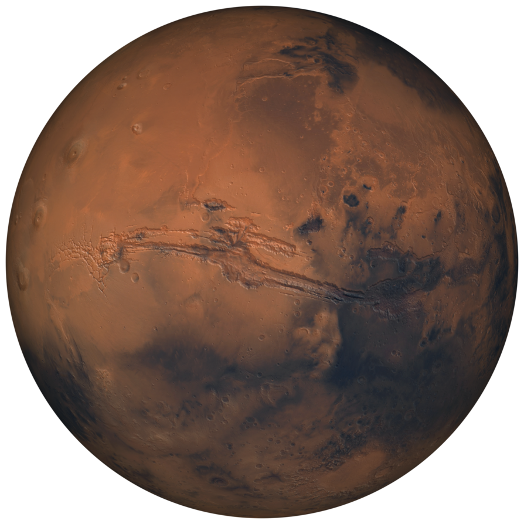

| Planets |
Summary |
Facts |
| Mercury  |
Mercury is the closest planet to the Sun and due to its proximity it is not easily seen except during twilight. For every two orbits of the Sun, Mercury completes three rotations about its axis and up until 1965 it was thought that the same side of Mercury constantly faced the Sun. Thirteen times a century Mercury can be observed from the Earth passing across the face of the Sun in an event called a transit, the next will occur on the 9th May 2016. |
- Mercury does not have any moons or rings.
- Your weight on Mercury would be 38% of your weight on Earth.
- A day on the surface of Mercury lasts 176 Earth days.
- A year on Mercury takes 88 Earth days.
- Mercury has a diameter of 4,879 km, making it the smallest planet.
|
Venus  |
Venus is the second planet from the Sun and is the second brightest object in the night sky after the Moon. Named after the Roman goddess of love and beauty, Venus is the second largest terrestrial planet and is sometimes referred to as the Earth’s sister planet due the their similar size and mass. The surface of the planet is obscured by an opaque layer of clouds made up of sulphuric acid. |
- Venus does not have any moons or rings.
- Venus is nearly as big as the Earth with a diameter of 12,104 km.
- Venus is thought to be made up of a central iron core, rocky mantle and silicate crust.
- A day on the surface of Venus (solar day) would appear to take 117 Earth days.
- A year on Venus takes 225 Earth days.
- The surface temperature on Venus can reach 471 °C.
|
Earth  |
Earth is the third planet from the Sun and is the largest of the terrestrial planets. The Earth is the only planet in our solar system not to be named after a Greek or Roman deity. The Earth was formed approximately 4.54 billion years ago and is the only known planet to support life. |
- The Earth’s rotation is gradually slowing.
- The Earth was once believed to be the centre of the universe.
- Earth has a powerful magnetic field.
- There is only one natural satellite of the planet Earth.
- The Earth is the densest planet in the Solar System.
|
| Mars  |
Mars is the fourth planet from the Sun and is the second smallest planet in the solar system. Named after the Roman god of war, Mars is also often described as the “Red Planet” due to its reddish appearance. Mars is a terrestrial planet with a thin atmosphere composed primarily of carbon dioxide. |
- Mars and Earth have approximately the same landmass.
- Mars is home to the tallest mountain in the solar system.
- Only 18 missions to Mars have been successful
- Mars has the largest dust storms in the solar system.
- On Mars the Sun appears about half the size as it does on Earth.
- Pieces of Mars have fallen to Earth.
- There are signs of liquid water on Mars.
- Mars takes its name from the Roman god of war.
|
Jupiter  |
The planet Jupiter is the fifth planet out from the Sun, and is two and a half times more massive than all the other planets in the solar system combined. It is made primarily of gases and is therefore known as a “gas giant”. |
- Jupiter is the fourth brightest object in the solar system.
- The ancient Babylonians were the first to record their sightings of Jupiter.
- Jupiter has the shortest day of all the planets.
- Jupiter orbits the Sun once every 11.8 Earth years.
- The Great Red Spot is a huge storm on Jupiter.
- Jupiter’s moon Ganymede is the largest moon in the solar system.
|
Saturn  |
Saturn is the sixth planet from the Sun and the most distant that can be seen with the naked eye. Saturn is the second largest planet and is best known for its fabulous ring system that was first observed in 1610 by the astronomer Galileo Galilei. Like Jupiter, Saturn is a gas giant and is composed of similar gasses including hydrogen, helium and methane. |
- Saturn can be seen with the naked eye.
- Saturn is the flattest planet.
- Saturn orbits the Sun once every 29.4 Earth years.
- Saturn’s upper atmosphere is divided into bands of clouds.
- Saturn is made mostly of hydrogen.
- Saturn has the most extensive rings in the solar system.
- Saturn has 150 moons and smaller moonlets.
|
Uranus  |
Uranus is the seventh planet from the Sun. While being visible to the naked eye, it was not recognised as a planet due to its dimness and slow orbit. Uranus became the first planet discovered with the use of a telescope. Uranus is tipped over on its side with an axial tilt of 98 degrees. It is often described as “rolling around the Sun on its side.” |
- Uranus turns on its axis once every 17 hours, 14 minutes.
- Uranus makes one trip around the Sun every 84 Earth years.
- Uranus is often referred to as an “ice giant” planet.
- Uranus hits the coldest temperatures of any planet.
- Uranus has two sets of very thin dark coloured rings.
|
Neptune  |
Neptune is the eighth planet from the Sun making it the most distant in the solar system. This gas giant planet may have formed much closer to the Sun in early solar system history before migrating to its present position. |
- Neptune spins on its axis very rapidly.
- Neptune is the smallest of the ice giants.
- The atmosphere of Neptune is made of hydrogen and helium, with some methane.
- Neptune has a very active climate.
- Neptune has a very thin collection of rings.
- Neptune has 14 moons.
|